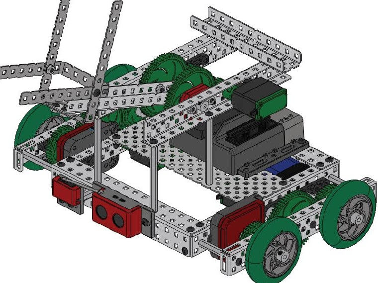
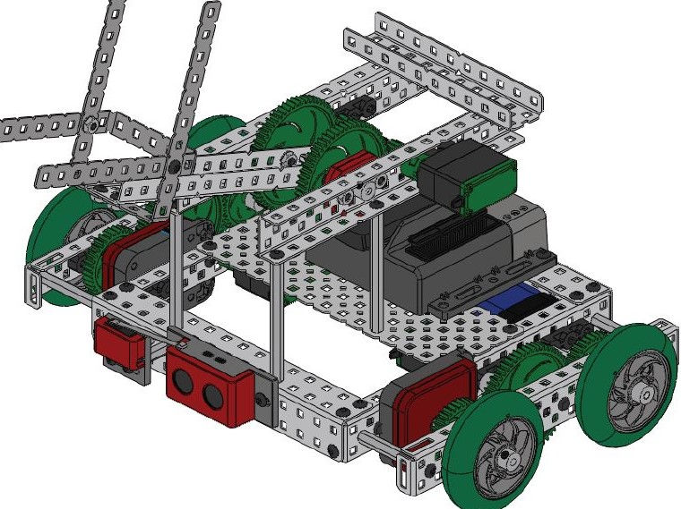

Jackson County 4-H Computing Club
Jackson County 4-H Computing Club

 

Welcome to Jackson County 4-H Computing Club web site!
In the summer of 2019, we will practice python programming. Click the link below to see the topics and download some of the codes that we are going to discuss during the club meetings.